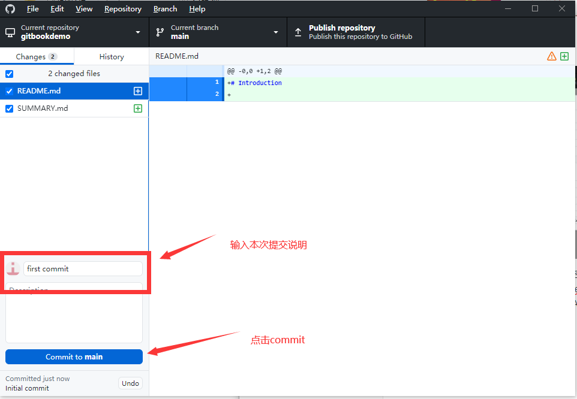
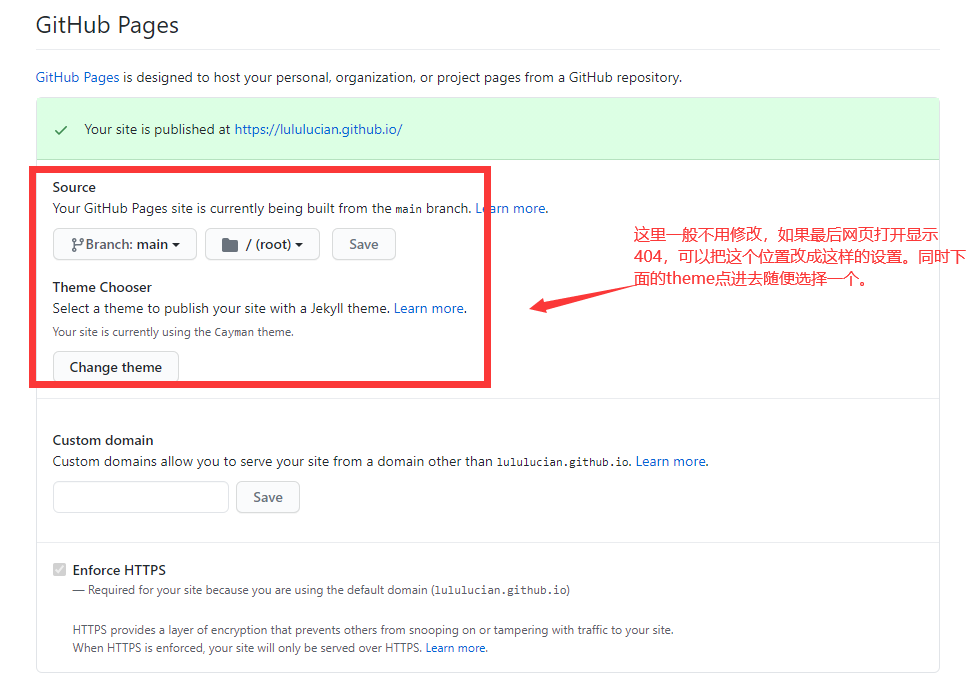

创建Git仓库
为了便于维护，建议把wiki的源码和编译后的网页分成两个仓库来管理。
创建源码仓库
打开 GitHubDesktop，点击左上角File->New repository，输入仓库的名字，这里的名字可以是任意自己喜欢的名字，然后点击蓝色的创建。
然后进入到新建的仓库对应的文件夹，在空白处按住shift同时点击右键，在菜单里点击在此处打开powershell窗口。输入命令gitbook init，git book会自动创建README.md和SUMMARY.md两个文件。
然后再次切回GitHubDesktop，把我们的项目提交到github上。

现在在github网页上可以看到我们刚才的提交了。
创建wiki仓库
接下来创建用于展示wiki的仓库。首先新建仓库的流程和刚才一样，但是需要注意的是这个仓库的名字必须是username.github.io username是你注册的github账号的username。
仓库建好之后进入对应的目录，随便创建一个空的txt文件然后按照上面的方式提交到github服务器上。
接下来打开github对应仓库的网页，这个仓库需要再额外设置一下。

修改完成后保存即可。